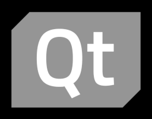
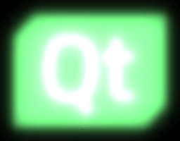
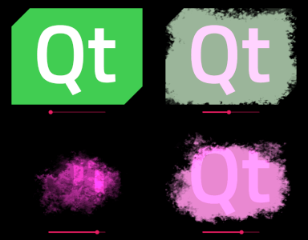
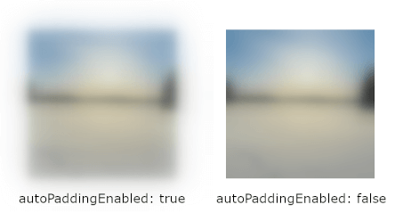
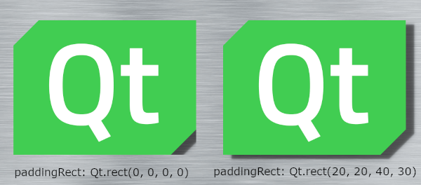

MultiEffect QML Type
Applies post-processing effect to an item. More...
| Import Statement: | import QtQuick.Effects |
| Inherits: |
Properties
- autoPaddingEnabled : bool
- blur : real
- blurEnabled : bool
- blurMax : int
- blurMultiplier : real
- brightness : real
- colorization : real
- colorizationColor : color
- contrast : real
- fragmentShader : string
- hasProxySource : bool
- itemRect : rect
- maskEnabled : bool
- maskInverted : bool
- maskSource : Item
- maskSpreadAtMax : real
- maskSpreadAtMin : real
- maskThresholdMax : real
- maskThresholdMin : real
- paddingRect : rect
- saturation : real
- shadowBlur : real
- shadowColor : color
- shadowEnabled : bool
- shadowHorizontalOffset : real
- shadowOpacity : real
- shadowScale : real
- shadowVerticalOffset : real
- source : Item
- vertexShader : string
Signals
Detailed Description
The MultiEffect type, the successor to the deprecated Qt Graphical Effects from Qt 5, applies a post-processing effect to the source item. Compared to the Qt Graphical Effects module, MultiEffect combines multiple effects (blur, shadow, colorization etc.) into a single item and shader which makes it better for multiple effects. There are several shader variations and the most optimal one gets selected based on the features used.
MultiEffect is designed specifically for most common effects and can be easily animated. If the MultiEffect doesn't contain the effect you need, consider implementing a custom effect using Qt Quick Effect Maker. For more information about shader effects, see the ShaderEffect reference documentation.
Example Usage
The following simple example shows how to apply a saturation effect on an item:
 |
import QtQuick
import QtQuick.Effects
...
Image {
id: sourceItem
source: "qt_logo_green_rgb.png"
visible: false
}
MultiEffect {
source: sourceItem
anchors.fill: sourceItem
saturation: -1.0
}
|
Here is a bit more complex example, applying multiple effects at the same time:
 |
import QtQuick
import QtQuick.Effects
...
MultiEffect {
source: sourceItem
anchors.fill: sourceItem
brightness: 0.4
saturation: 0.2
blurEnabled: true
blurMax: 64
blur: 1.0
}
|
Below is an example of how to use the mask, colorization and brightness effects together to fade away an element. This kind of hiding/showing of elements can be, for example, bind to a slider value or animations like NumberAnimation. Note how the visible property is false when the item is totally faded away, to avoid unnecessary rendering of the effect.
 |
import QtQuick
import QtQuick.Effects
import QtQuick.Controls.Material
...
MultiEffect {
property real effectAmount: effectSlider.value
source: sourceItem
anchors.fill: sourceItem
brightness: effectAmount
colorizationColor: "#ff20d0"
colorization: effectAmount
maskEnabled: true
maskSource: Image {
source: "mask.png"
}
maskSpreadAtMin: 0.2
maskThresholdMin: effectAmount
visible: effectAmount < 1.0
}
Slider {
id: effectSlider
anchors.bottom: parent.bottom
anchors.horizontalCenter: parent.horizontalCenter
}
|
Performance
There are a few things to consider for optimal performance:
- To get the most optimal shader, enable only the effects which you actually use (see blurEnabled, shadowEnabled, maskEnabled). Simple color effects (brightness, contrast, saturation, colorization) are always enabled, so using them doesn't add extra overhead.
- See the Performance notes of the properties which may change the shader or the effect item size and don't modify these during animations.
- When the MultiEffect isn't used, remember to set its
visibleproperty to be false to avoid rendering the effects in the background. - Blur and shadow are the heaviest effects. With these, prefer increasing blurMultiplier over blurMax and avoid using source items which animate, so blurring doesn't need to be regenerated in every frame.
- Apply effects to optimally sized QML elements as more pixels means more work for the GPU. When applying the blur effect to the whole background, remember to set autoPaddingEnabled false or the effect grows "outside" the window / screen.
Property Documentation
autoPaddingEnabled : bool |
When blur or shadow effects are enabled and this is set to true (default), the item size is padded automatically based on blurMax and blurMultiplier. Note that paddingRect is always added to the size.

Performance note: Item size should be as small as possible for optimal performance.
Performance note: Causes a resize of the item; do not change this property during animation.
See also paddingRect.
blur : real |
This property defines how much blur (radius) is applied to the source.
The value ranges from 0.0 (no blur) to 1.0 (full blur). By default, the property is set to 0.0 (no change). The amount of full blur is affected by blurMax and blurMultiplier.
Performance note: If you don't need to go close to 1.0 at any point of blur animations, consider reducing blurMax or blurMultiplier for optimal performance.
blurEnabled : bool |
Enables the blur effect.
Performance note: Causes shader change; do not change this property during animation.
blurMax : int |
This property defines the maximum pixel radius that blur with value 1.0 will reach.
Meaningful range of this value is from 2 (subtle blur) to 64 (high blur). By default, the property is set to 32. For the most optimal performance, select as small value as you need.
Note: This affects to both blur and shadow effects.
Performance note: Causes shader change; do not change this property during animation.
Performance note: Causes a resize of the item; do not change this property during animation.
blurMultiplier : real |
This property defines a multiplier for extending the blur radius.
The value ranges from 0.0 (not multiplied) to inf. By default, the property is set to 0.0. Incresing the multiplier extends the blur radius, but decreases the blur quality. This is more performant option for a bigger blur radius than blurMax as it doesn't increase the amount of texture lookups.
Note: This affects to both blur and shadow effects.
Performance note: Causes a resize of the item; do not change this property during animation.
brightness : real |
This property defines how much the source brightness is increased or decreased.
The value ranges from -1.0 to 1.0. By default, the property is set to 0.0 (no change).
colorization : real |
This property defines how much the source is colorized with the colorizationColor.
The value ranges from 0.0 (not colorized) to 1.0 (fully colorized). By default, the property is set to 0.0 (no change).
colorizationColor : color |
This property defines the RGBA color value which is used to colorize the source.
By default, the property is set to Qt.rgba(1.0, 0.0, 0.0, 1.0) (red).
See also colorization.
contrast : real |
This property defines how much the source contrast is increased or decreased.
The value ranges from -1.0 to 1.0. By default, the property is set to 0.0 (no change).
fragmentShader : string |
Read-only access to filename of the currently used fragment shader.
hasProxySource : bool |
Returns true when the MultiEffect internally creates ShaderEffectSource for the source item and false when source item is used as-is. For example when source is Image element or Item with layer.enabled set to true, this additional proxy source is not needed.
itemRect : rect |
Read-only access to effect item rectangle. This can be used e.g. to see the area item covers.
See also paddingRect and autoPaddingEnabled.
maskEnabled : bool |
Enables the mask effect.
Performance note: Causes shader change; do not change this property during animation.
maskInverted : bool |
This property switches the mask to the opposite side; instead of masking away the content outside maskThresholdMin and maskThresholdMax, content between them will get masked away.
By default, the property is set to false.
maskSource : Item |
Source item for the mask effect. Should point to ShaderEffectSource, item with layer.enabled set to true, or to an item that can be directly used as a texture source (e.g. Image). The alpha channel of the source item is used for masking.
maskSpreadAtMax : real |
This property defines the smoothness of the mask edges near the maskThresholdMax. Using higher spread values softens the transition from the transparent mask pixels towards opaque mask pixels by adding interpolated values between them.
The value ranges from 0.0 (sharp mask edge) to 1.0 (smooth mask edge). By default, the property is set to 0.0.
maskSpreadAtMin : real |
This property defines the smoothness of the mask edges near the maskThresholdMin. Setting higher spread values softens the transition from the transparent mask pixels towards opaque mask pixels by adding interpolated values between them.
The value ranges from 0.0 (sharp mask edge) to 1.0 (smooth mask edge). By default, the property is set to 0.0.
maskThresholdMax : real |
This property defines an upper threshold value for the mask pixels. The mask pixels that have an alpha value below this property are used to completely mask away the corresponding pixels from the source item. The mask pixels that have a higher alpha value are used to alphablend the source item to the display.
The value ranges from 0.0 (alpha value 0) to 1.0 (alpha value 255). By default, the property is set to 1.0.
maskThresholdMin : real |
This property defines a lower threshold value for the mask pixels. The mask pixels that have an alpha value below this property are used to completely mask away the corresponding pixels from the source item. The mask pixels that have a higher alpha value are used to alphablend the source item to the display.
The value ranges from 0.0 (alpha value 0) to 1.0 (alpha value 255). By default, the property is set to 0.0.
paddingRect : rect |
Set this to increase item size manually so that blur and/or shadows will fit. If autoPaddingEnabled is true and paddingRect is not set, the item is padded to fit maximally blurred item based on blurMax and blurMultiplier. When enabling the shadow, you typically need to take shadowHorizontalOffset and shadowVerticalOffset into account and adjust this paddingRect accordingly.
Below is an example of adjusting paddingRect with autoPaddingEnabled set to false so that the shadow fits inside the MultiEffect item.

Performance note: Item size should be as small as possible for optimal performance.
Performance note: Causes a resize of the item; do not change this property during animation.
See also autoPaddingEnabled.
saturation : real |
This property defines how much the source saturation is increased or decreased.
The value ranges from -1.0 (totally desaturated) to inf. By default, the property is set to 0.0 (no change).
shadowBlur : real |
This property defines how much blur (radius) is applied to the shadow.
The value ranges from 0.0 (no blur) to 1.0 (full blur). By default, the property is set to 1.0. The amount of full blur is affected by blurMax and blurMultiplier.
Performance note: The most optimal way to reduce shadow blurring is to make blurMax smaller (if it isn't needed for item blur). Just remember to not adjust blurMax during animations.
shadowColor : color |
This property defines the RGBA color value which is used for the shadow. It is useful for example when a shadow is used for simulating a glow effect.
By default, the property is set to Qt.rgba(0.0, 0.0, 0.0, 1.0) (black).
shadowEnabled : bool |
Enables the shadow effect.
Performance note: Causes shader change; do not change this property during animation.
shadowHorizontalOffset : real |
This property defines the horizontal offset of the shadow from the item center.
The value ranges from -inf to inf. By default, the property is set to 0.0.
Note: When moving shadow position away from center and adding shadowBlur, you possibly also need to increase the paddingRect accordingly if you want the shadow to not be clipped.
shadowOpacity : real |
This property defines the opacity of the drop shadow. This value is multiplied with the shadowColor alpha value.
The value ranges from 0.0 (fully transparent) to 1.0 (fully opaque). By default, the property is set to 1.0.
shadowScale : real |
This property defines the scale of the shadow. Scaling is applied from the center of the item.
The value ranges from 0 to inf. By default, the property is set to 1.0.
Note: When increasing the shadowScale, you possibly also need to increase the paddingRect accordingly to avoid the shadow from being clipped.
shadowVerticalOffset : real |
This property defines the vertical offset of the shadow from the item center.
The value ranges from -inf to inf. By default, the property is set to 0.0.
Note: When moving shadow position away from center and adding shadowBlur, you possibly also need to increase the paddingRect accordingly if you want the shadow to not be clipped.
source : Item |
This property holds the item to be used as a source for the effect. If needed, MultiEffect will internally generate a ShaderEffectSource as the texture source.
Note: It is not supported to let the effect include itself, for instance by setting source to the effect's parent.
Note: If the source item has layer.enabled set to true, it will be used directly. This is good for the performance and often desired, when the source is hidden. But if the source remains visible and the effect adds padding (autoPaddingEnabled, paddingRect), that padding can affect the appearance of the source item.
See also hasProxySource.
vertexShader : string |
Read-only access to filename of the currently used vertex shader.
Signal Documentation
shaderChanged() |
This signal is emitted when the used shader changes.
Note: The corresponding handler is onShaderChanged.
See also fragmentShader and vertexShader.